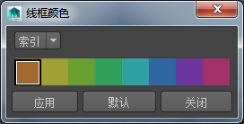

用户界面
- 栅格(Grid)
- 显示或隐藏所有视图面板中的栅格。
当栅格可见时，可以在单个面板中使用该面板的“显示 > 栅格”(Show > Grid)菜单项来禁用栅格。
选择“显示 > 栅格”(Display > Grid) >
 ，以设置栅格选项。
，以设置栅格选项。
- 平视显示仪(Heads Up Display)
- 该子菜单包括多个可以在视图面板内容顶部上方显示或隐藏的读数。
有关这些选项的详细信息，请参见平视显示仪 (HUD) 选项。
对象
- 隐藏(Hide)、显示(Show)
- 使用“显示 > 隐藏”(Display > Hide)隐藏未在处理的项目并减少视觉混乱。这在您想要从视图移除对象，但不想将其删除或移动时非常有用。
若要显示项目，请使用“显示 > 显示”(Display > Show)子菜单，其中包括与“显示 > 隐藏”(Display > Hide)相同的选项。
有关“隐藏”(Hide)和“显示”(Show)子菜单选项的详细信息，请参见“隐藏”(Hide)选项和“显示”(Show)选项。
- 切换显示/隐藏(Toggle Show/Hide)
-
- (第一个选择)独立((First Selection) Independent) - 切换所有选定对象的可见性。
- (第一个选择)从属((First Selection) Dependent) - 如果选择多个对象，则第一个选定对象指定其他选定对象的可见性。
选择“显示 > 切换隐藏/显示”(Display > Toggle Hide/Show)>
以打开“切换可见性选项”(Toggle Visibility Options)窗口。在此窗口中选择某个选项，然后单击“应用”(Apply)或按 H 键可快速切换选定对象的可见性。
- 根据摄影机可见性(Per Camera Visibility)
-
此子菜单中的项允许您从当前摄影机隐藏对象。它还允许您从除当前摄影机之外的所有摄影机隐藏对象。
- “摄影机独占”(Exclusive To Camera) - 选择对象，然后选择此选项，以便选定对象只能由当前摄影机看到，并从所有其他摄影机隐藏。
- “从摄影机隐藏”(Hidden From Camera) - 选择对象，然后选择此选项，以便选定对象从当前摄影机隐藏。
- “从独占列表中移除”(Remove From Exclusive) - 从设置为当前摄影机独占的对象列表中移除选定对象。
- “从隐藏列表中移除”(Remove From Hidden) — 从设置为对当前摄影机隐藏的对象列表中移除选定对象。
- “针对摄影机移除所有对象”(Remove All For Camera) - 移除当前摄影机的所有独占/隐藏条件。
- “移除全部”(Remove All) - 移除所有摄影机的所有独占/隐藏条件。
- 线框颜色(Wireframe Color)
- 用于设置选定对象的线框颜色。可以使颜色选择窗口保持打开状态，便于选择并应用颜色。
从下拉列表中选择 RGB 以将完整的 RGB 颜色指定给线框显示。
- 对象显示(Object Display)
- 使用此子菜单中的项目控制选定对象的显示和可选性。
- 模板(Template)/取消模板(Untemplate) - 使对象不可选，以便作为场景中的参照。已模板化的对象会显得较暗。无法选择或捕捉已模板化的对象。
- 边界框(Bounding Box)/无边界框(No Bounding Box) - 在每个对象占据的总空间的周围绘制一个框。
- 几何体(Geometry)/无几何体(No Geometry) - 显示或隐藏对象（例如，曲面或多边形网格）的实际几何体。这样可以启用组件（如 CV）的显示，但会关闭实际对象本身。
- 忽略硬件着色器(Ignore Hardware Shader)/使用硬件着色器(Use Hardware Shader) - 允许您在多个多边形或 NURBS 对象上忽略硬件着色器。对象会与其未上纹理的默认明暗器一同显示。使用“硬件明暗器”(Hardware Shader)可以显示多个多边形或 NURBS 对象的硬件明暗器。
- 快速交互(Fast Interaction) - 通过减少显示的几何体（如多边形）数量来提高性能，特别是移动摄影机（例如，旋转场景视图）时的性能。
该子菜单中的选项包括：
- 变换显示(Transform Display)
- 通过此子菜单中的项目，可以在视图窗口中显示或隐藏对象特定的 UI。
- 局部旋转轴(Local Rotation Axes) - 启用或禁用对象的局部旋转轴的显示。
- 旋转枢轴(Rotate Pivots) - 启用或禁用对象的旋转枢轴的显示。
- 缩放枢轴(Scale Pivots) - 启用或禁用对象的缩放枢轴的显示。
- 选择控制柄(Selection Handles) - 启用或禁用操纵器上的选择控制柄的显示。
该子菜单中的选项包括：
另请参见显示或隐藏组件和显示或隐藏对象特定的 UI。
- 多边形(Polygons)
- 有关该子菜单中选项的详细信息，请参见多边形选项。
- NURBS
- 有关该子菜单中选项的详细信息，请参见 NURBS 选项。
- 动画(Animation)
- 有关该子菜单中选项的详细信息，请参见动画选项。
- 渲染
- 有关该子菜单中选项的详细信息，请参见“渲染”(Rendering)“照明/着色”((Lighting/Shading))选项。
- 在所有视图中框显所有内容(Frame All in All Views)
- 平移和推拉所有视图面板以显示所有的对象（按 Shift+A）。
若要显示特定视图面板中的所有对象，请按 A 键或在“视图”(View)面板中选择“视图 > 框显全部”(View > Frame All)。另请参见使有关选定或所有对象的视图居中。
- 在所有视图中框显当前选择(Frame Selection in All Views)
-
平移和推拉所有视图面板以框显选定的对象。如果选择父对象、但不选择其子对象，则仅框显父对象。也可以按 Shift+F。
如果未选择对象，则此选项的功能与“在所有视图中框显所有内容”(Frame All in All Views)相同。
若要显示特定视图面板中的所有对象，请按 F 键或在“视图”(View)面板中选择“视图 > 框显当前选择”(View > Frame Selectio)。另请参见使有关选定或所有对象的视图居中。
- 在所有视图中框显当前选择(包含子对象) (Frame Selection with Children in All Views)
-
平移和推拉所有视图面板以框显选定的对象及其子对象。如果选择父对象，则会同时框显父对象和子对象。也可以按 Ctrl+Shift+F。
若要显示特定视图面板中的所有对象及其子对象，请按 Ctrl+F 或在“视图”(View)面板菜单中选择“视图 > 框显当前选择(包含子对象)”(View > Frame Selection with Children)。另请参见使有关选定或所有对象的视图居中。